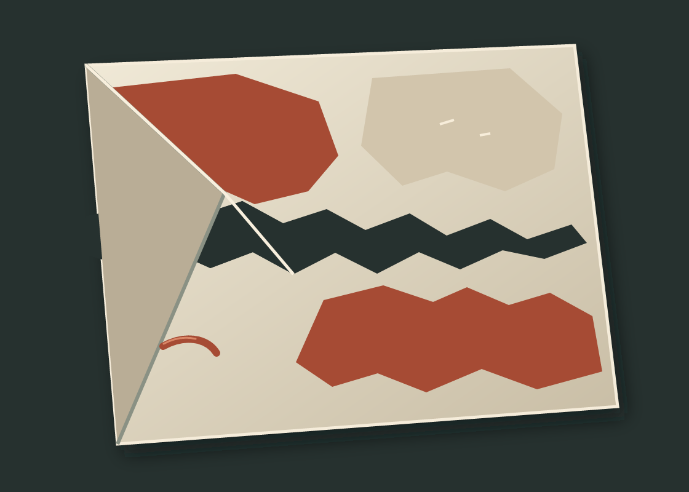

Under the Cut
A cut crosses two ink fields and passes beneath an unprinted fold.

About the image
The cut opens to the ground and continues beneath a folded corner. Ink stays on the face; the underside is left unprinted. No mark stands for sound, duration, weather, or a mapped place.
This is a digital vector image of an imagined paper form, not a printmaking record or a physical material test.